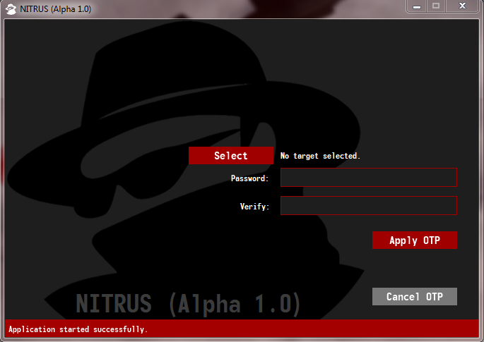
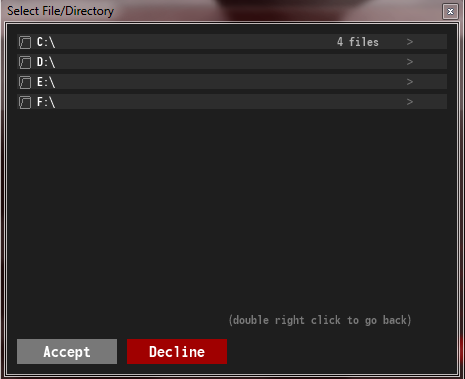
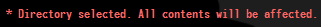
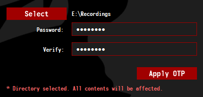
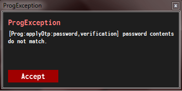
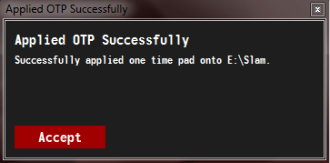
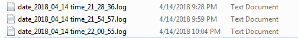

<html>
	<link rel="stylesheet" type="text/css" href="style/global.css">
	<link rel="icon" href="style/web-icon.png">
	<title> NITRUS Application </title>
</html>
<body>
	<div class="master-div">
		<div>
			<header class="header-object">
				<h1 class="header-text"> Maxim Kasyanenko </h1>
				<a href="about.html" class="header-directory-button"> About </a>
				<a href="software.html" class="header-directory-button"> Software </a>
				<a href="index.html" class="header-directory-button"> Home </a>
				<a href="creative-commons-3.0-license.html" class="header-directory-button"> Creative Commons </a>
			</header>
			<hr class="div-separator">
			<div id="main-body-div">
				<h2> General Description </h2>
				<p>
					NITRUS is a light-weight application that uses the power of
					modular addition to create a simple, yet strong <a class="hyperlink" href="https://en.wikipedia.org/wiki/One-time_pad">encryption
					system</a>. The interface is built using <a class="hyperlink" href="https://docs.oracle.com/javafx/2/overview/jfxpub-overview.htm">javafx</a> with a very simplistic design to provide the
					most convenient experience possible. It is <strong>highly</strong> recommended that
					you download and install <a class="hyperlink" href="http://www.oracle.com/technetwork/java/javase/downloads/jre8-downloads-2133155.html" target="_blank">java jre 8u161</a> or higher to make sure
					that the application runs as intended.
				</p>
				<h2> Disclaimers </h2>
				<p>
					Although I try to thouroughly test my applications before releasing them,
					a rare bug may still slip by. As the <a class="hyperlink" href="creative-commons-3.0-license.html" target="_blank">
					license</a> suggests, I will not take responsibilty for any damage, but you may
					report bugs or submit suggestions on <a class="hyperlink" href="github.com" target="_blank">github</a>.
					You can also minimize the risk of such incidents by downloading a <strong>stable</strong>
					(aka. anything that's not "alpha" or "beta") version of the software.
				</p>
				<h2> Manual </h2>
				
				<p>
					The startup screen will look something along the lines of this: a very nice
					"spy" icon to signal that this is a fierce application that will stop at
					nothing to protected your confidential information.
				</p>
				
				<p>
					When you press <strong>Select</strong> to select a target file/directory to encrypt or decrypt,
					you will be greeted by this file selection prompt. To navigate through the list of files on
					any of your drives, double click on your desired folder as indicated by the folder icon and
					the little arrow on the right side of the entry. To go back, double click your right mouse button.
				</p>
				<p>
					To select your desired file, click on an entry once, and click <strong>"Accept"</strong>
					to confirm your selection. Clicking <strong>Decline</strong> will close the prompt
					and no entry will be selected.
				</p>
				
				<p>
					Upon selecting a file/directory, the label that used to say <strong>"No target selected"</strong> will
					now tell you the path of the selected file/directory. If the path runs off the side of the window,
					you may hover over it to reveal the complete path.
				</p>
				
				<p>
					Though this is a small feature, I do feel like it is worth mentioning. When you select a <strong>directory</strong>
					you will be notified that <strong>ALL</strong> files within that directory will be affected by the next
					run of the one time pad.
				</p>
				
				<p>
					Once you are happy with your selection, you can then fill out the password and verification
					fields for the application to use as the encryption <strong>secret</strong>.
				</p>
				
				<p>
					If you, by chance, enter mismatching passwords in the two fields, the application will
					catch this error, and notify you using a notification dialogue. To acknowledge the error,
					press <strong>Accept</strong>.
				</p>
				
				<p>
					Once the application has started to apply the <strong>one time pad</strong>, the status
					bar at the bottom of the window will display the status of the current file being
					processed. The speed at which the files are processed are based on your <strong>storage drive</strong>
					and your <strong>processor</strong>. Eventually, if need be, I would like to link the <strong>GPU</strong>
					to process the <strong>modular arithmetic</strong>.
				</p>
				
				<p>
					If for whatever reason you would like to stop the process, you may simply press the
					<strong>Cancel OTP</strong> button to immediately stop. Note however, currently,
					any files that have already been processed <strong>will not be undone</strong>.
				</p>
				
				<p>
					Once all file(s) have been processed, you will be notified by a simple prompt saying
					that everything was successful. Depending on if the file(s) were previously encrypted,
					on this pass, they will be decrypted. <strong>YOU MUST USE THE SAME PASSWORD FOR DECRYPTION
					AS YOU HAVE WITH ENCRYPTION</strong>. Note: this application does not store file encryption
					histories and/or their associated passwords or secrets. <strong><o style="color:rgb(225,50,50)">If you have forgotten the password, the file will most likely be lost forever</o></strong>.
				</p>
				
				<p>
					After the process, you will also be notified precisely how long it took to process
					all of the files.
				</p>
				
				<p>
					And finally, just for your maintenance, this application also creates logs to
					provide debug information about the application's operations. This would be
					a <strong>perfect</strong> file to send when submitting a bug report. 
				</p>
				<hr>
				<p>
					Thank you so much for reading this user's manual of NITRUS. If you have not 
					<a class="hyperlink" href="software.html">downloaded</a> it yet, do give it 
					a shot and suggest improvements and report bugs. I will try to review and 
					implement as many of these suggestions or fixes as possible.<br>
					- Max
				</p>
			</div>
		</div>
	</div>

	<footer class="master-footer">
		<p> </p>
	</footer>
</body>